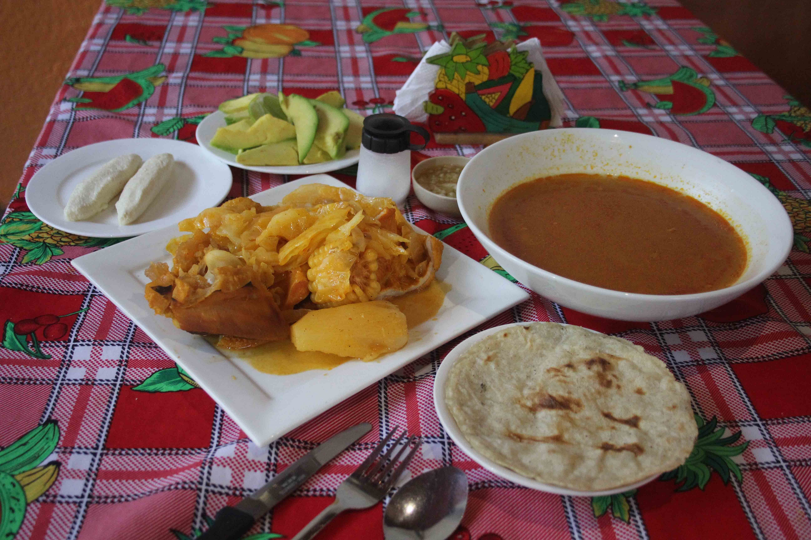

Sopa de mondongo
30/10/2018, Managua Es sin duda que la mejor sopa de mondongo es originaria en Masatepe, Masaya en donde su preparación es muy selectiva para crear algo sumamente especial. La preparación tiene que ser con mucho cuidado para poder prepararlo con un rico sabor. El arroz se remoja antes de cocerlo, se lava bien el mondongo con suficiente agua y naranja agria , se raspa con cuchillo para eliminar cualquier parte gruesa, se pasa la naranja agria varias veces , se deja remojar con el jugo de naranja agria unos 60 minutos o mas, luego se parte en torsos para echarlos en una hoya o porra grande y se agrega; cebolla, chiltoma, tomates, achiote, ajo, en esta primera cocion es donde agarra el gusto esta riquísima sopa de mondongo en donde se deja por cuatro horas para depues que ya este suave el mondongo se echa las verduras como elote, quequisque, chayote, chilote, yuca, ahora se licua el arroz mojado y se echa en la olla para que la sopa se espese y claro se pone a fuego lento y se tiene que mover para que no se pegue, se agrega jugo de naranja agria, sal y si gusta chile pues mejor, por ultimo se agrega repoyo en partes. Esto se puede acompañar con tortillas y sera una delicia beber sopa de mondongo.